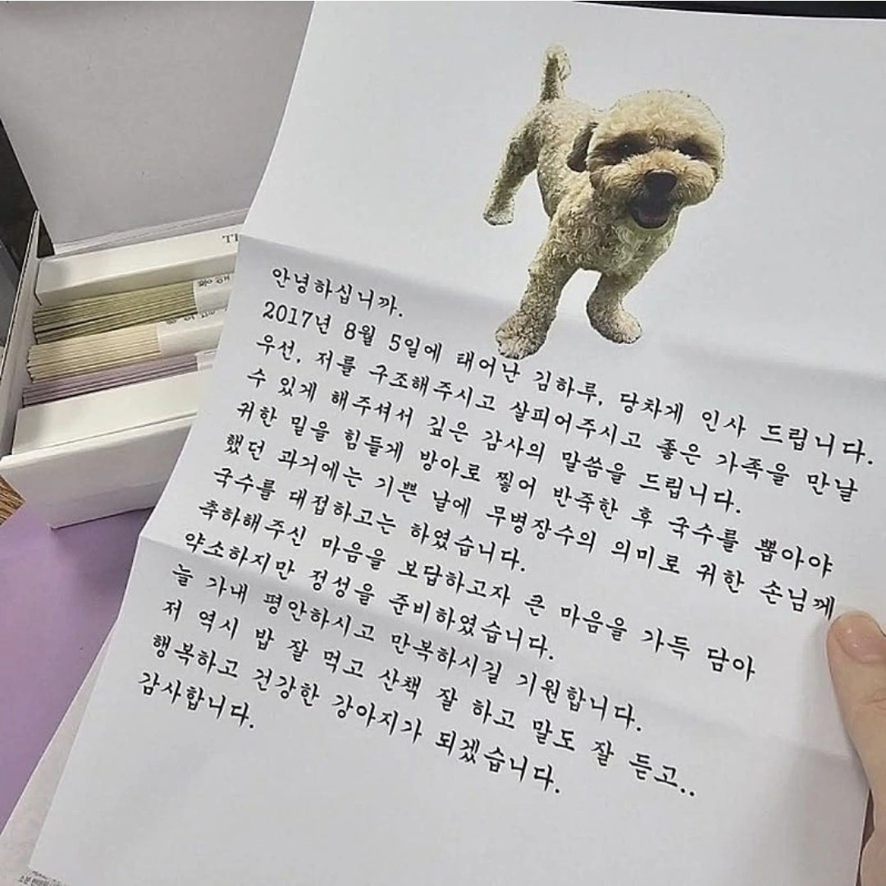

다컸네
이제 장가보내도 되것어
(중성화)

배운 강아지네
철들었네 철들었어!
학당 강아지인가 배운 티가 나네
나이보다 어른스럽게 말하네
글 잘쓰네
좀 배운강아진데
확실히 배운견은 다르구만
잘 배웠는데ㅋㅋㅋㅋㅋㅋㅋㅋ
서당개 3년이면....
장가 가도 되것어
앗...아아..
졸라 좋은주인한테 간것같당
흥 골칫덩어리 개 하나 나가서 살만하기만 하구만 뭘 이런걸 보내(눈물 주르륵)
쯧! 칠칠맞게 장난감이나 두고 가고!
이놈에거 냄새나니까 빨리 치워야지...
(잘 보이는 곳에 고이 올려둔다.)
얼탱이없네 ㅋㅋㅋ
기특허네...
나도 저 강아지랑 비슷한 정도는 글 쓸수있음 칭찬좀
개보다 낫네
짜식 기합차구만
철들었구먼
짜식 효견이구만
당차게 인사!
할아버지가 데려갔나보네
얼탱이없는디 울컥하긴 할거같음 ㅋㅋㅋ
ㅋㅋㅋㅋㅋㅋㅋ